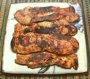

|
Grilled Country RibsChile - | ||||
| Serves: Effort: Sched: DoAhead: |
4 main *** 1-1/2 hrs Yes |
Intensely flavorful, moist and tender grilled marinated country ribs - savory, rather than dripping with sugary goop. | |||
|
4 ------ 1 4 7 3 2 1-1/2 1 ------ tt tt |
# --- oz T t c c --- |
Country Ribs (1) -- Marinade Chili Jalapeno Scallions can Chipotle Adobo (2) Oregano, fresh Salt Wine Vinegar, red Olive Oil, pure --------- Salt Pepper |
Naturally, the recipe has been adapted slightly, since the chilis commonly used in Chile are not available in North America. Prep - (8 hrs + (25 min work))
|